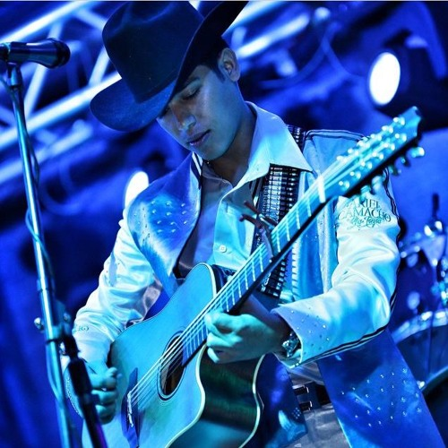

José Ariel Camacho Barraza (8 de julio de 1992 -25 de febrero de 2015) Nació en Sinaloa, México. Cantante, músico y compositor mexicano de música regional, fue el líder de la agrupación de “Ariel Camacho y Los Plebes del Rancho”. Hijo de Benito Camacho Sánchez y Reynalda Armida Barraza, desde pequeño se mostró interesado en el mundo de la música regional, dado que creció en Sinaloa, el entorno de este siempre estuvo rodeado de corridos y música norteña. Cuando era pequeño recibió una guitarra como regalo de su abuelo, esta era más grande que el mismo Ariel, al dársela el abuelo le dijo: ”Toma hijo esta es la TUYIA”, motivo por el que se le dio el apodo de “La Tuyia” a Ariel. Mientras cursaba sus primeros años de estudio participó en numerosos carnavales e interpretaba algunas canciones; desde que recibió la guitarra se enfocó en aprender a tocar, en la secundaria fue participó en un grupo de música cristiana, en este conoció a quien sería su compañero en la música y vida, Cesar Sánchez, al cual se referían como “El Tigre”, con el paso del tiempo fue mejorando sus habilidades.
En 2013, junto a Cesar Sánchez, empieza la búsqueda de compañeros para conformar un grupo musical orientado a la música regional, mientras buscaba encontró a Omar Burgos, el cual se convirtió en el tubero del grupo, los tres emprendieron y formaron “Ariel Camacho y los Plebes del Rancho”, posteriormente, dan con Jaime González, quien fue el manager de la agrupación, junto a estos Ariel Camacho, ganó gran reputación en poco tiempo, sus habilidades le ganaron el aprecio de las fans, la primera canción de la agrupación fue “El Rey de corazones”, la cual permaneció por meses en los primeros puestos de los rankings. Después de varias presentaciones el grupo llamó la atención del sello “JG Music”, con el que firman contrato en 2013, posteriormente se unen al sello discográfico “Del Records”, ese mismo año publicaron su primer álbum, “Karma” (2014), este incluía las canciones “El Karma”, “El toro encartado”, “Por no perderte te perdí”, “Arrodíllate” y “Sangre se paga con sangre”, entre otras. El talento de la banda se dio a conocer a través de las redes sociales que quedaron encantadas con el tono de voz, de Ariel y sus letras, la banda participó de diversas ferias y eventos estatales. El gran éxito de la agrupación “Rey de corazones”, siguió escuchándose por largo tiempo, este le abrió las puertas a la banda que fue escalando poco a poco, hasta conseguir la fama y el reconocimiento, por el que tanto habían luchado. Sin embargo, el siguiente año afectó gravemente a la banda, a Ariel le encantaban los autos y la velocidad, había sufrido accidentes por exceso de velocidad, en uno de estos accidentes estuvo en coma por dos días, pero logro sobreponerse, aun así, el cantante siguió conduciendo de la manera que le gustaba.
El 25 de febrero de 2015, la banda tuvo una presentación cerca del rancho en Guamuchil, interpretaron sus más grandes éxitos, finalizando con “Karma”, al terminar Ariel y otros se dirigieron hacia el rancho, tomando la ruta de carretera de Reforma-Angostura, este iba a alta velocidad y sufrió un grave accidente, en este Ariel fallece junto a Melina Durán y Julio Valverde; los otros acompañantes salieron gravemente heridos. El 25 de febrero de 2015, Ariel Camacho, pierde la vida en accidente automovilístico. Después de la muerte de Ariel, la banda continuo con el proyecto musical del líder, por esto se integró José Manuel como primera voz y requinto, más tarde cambiaron su nombre, por “Los Plebes del Rancho de Ariel Camacho”, en 2015 publican el álbum “Hablemos”, seguido de “Recuerden mi estilo” (2016), ese mismo año dejan “Del Records”, debido a problemas con el manager, en ese momento regresan al “JG Music”, desde entonces han tenido diversos cambios e incorporaciones de cantantes, actualmente la banda está conformada por César Iván Sánchez Luna, Israel Meza y Juan Jesús “Johnny” Cortés. Han ganado 5 premios Billboard entre 2016 y 2017,fueron escogidos como “Artista del Año Debut”, “Canción Regional Mexicana del Año”, Álbum Regional Mexicano del Año, Top Latin Albums/Artista del Año” Y “Regional Mexican Albums/Artista del Año”. Desde mediados de 2018, se unió a la banda el padre de Ariel Camacho, Benito Camacho, este canta de forma similar y es muy apreciado por los fans de la banda.
